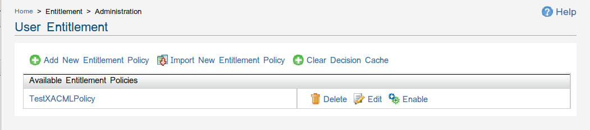
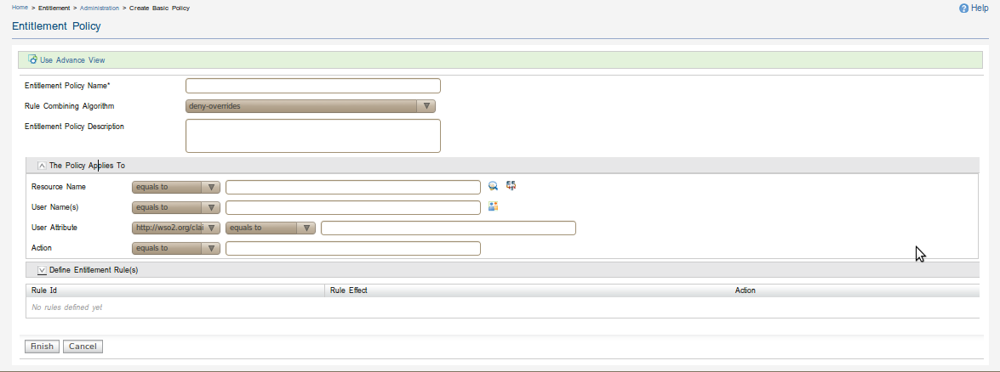
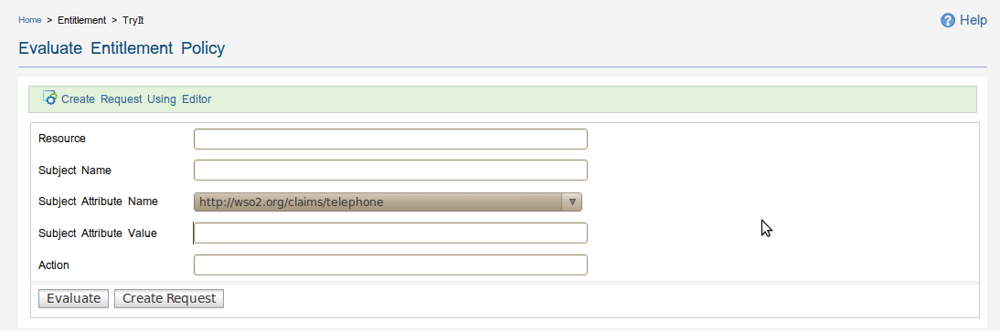

Entitlement Management

Figure 1: Entitlement Management

Figure 2: Basic Policy Creation Wizard UI

Figure 3: Evaluation Request Creation UI
The Entitlement Management component of the WSO2 Carbon facilitates the management
and control of policies defined in XACML. The key functionalities of this component includes:
- Create XACML policy using basic or advance policy creation wizards
- Edit XACML policy using advance UI view or XML view
- Activate or De-Activate existing XACML policy
- Import existing XACML policy from file system or registry
- Evaluate XACML policies
- Create basic XACML requests for Evaluation
- Clear decision cache
External References: